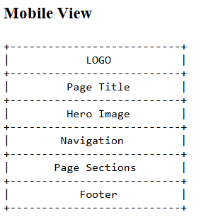

Site Name
Name: Machu Picchu Travel Guide
I chose this name because it clearly communicates that the website provides travel information and guidance specifically for visiting Machu Picchu.
Site Purpose
The purpose of this website is to guide travelers who want to visit Machu Picchu by providing essential information such as transportation options, ticket types, best visiting times, packing tips, and recommended experiences.
Scenarios
- What transportation options are available to reach Machu Picchu from Cusco?
- When is the best time of the year to visit Machu Picchu with fewer tourists?
Color Scheme
Primary Color: Dark Green (#0B3D2E) – For headers and accents.
Secondary Color: Soft Beige (#F2E8CF) – For background elements.
Typography
Font 1: Merriweather – Used for headings.
Font 2: Roboto – Used for all body text.
Wireframes
Mobile Wireframe
This wireframe shows the simplified vertical layout for mobile screens.

Desktop Wireframe
This wireframe shows the wider layout for desktop screens.